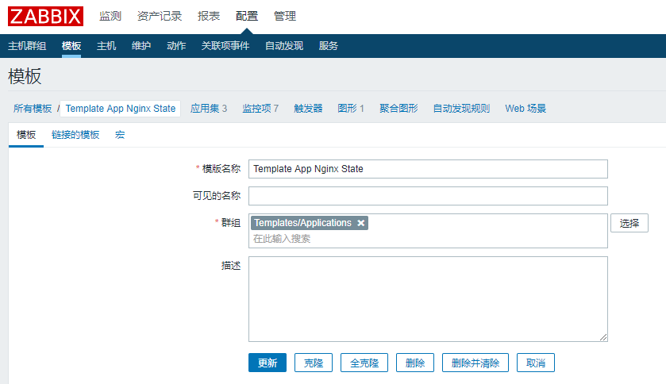

zabbix 监控 nginx
如果需要监控不同的则需要开启不同的状态检测页(具有差异性配置文件)，也许通过 tengine 的 nginx_upstream_check_module 模块可以解决这个问题。
修改配置文件
配置文件组成
default.conf # nginx 配置 nginx_status.sh # 探测 nginx 状态 zabbix_agentd.conf # zabbix-agent 配置文件 userparameter_nginx.conf # 定义 zabbix-agent 键值，命名规则为：userparameter_{监控的服务或其他}.conf zbx_export_templates.xml # zabbix 监控模板，多数为 2.X、3.X 且在 zabbix4.X 上不适用。
修改 zabbix-agent 配置文件 以下为 zabbix-agent 必填项：
# vim /etc/zabbix/zabbix_agentd.conf # [root@nginx-node-2 zabbix]# egrep -v "(^$|^#)" /etc/zabbix/zabbix_agentd.conf # PidFile=/var/run/zabbix/zabbix_agentd.pid # LogFile=/var/log/zabbix/zabbix_agentd.log # LogFileSize=1 # 限制 zabbix-agent 日志大小 # Server=192.168.0.74 # 指定 zabbix-server 地址 # ServerActive=192.168.0.74 # 检查 zabbix-server 活动情况，默认为 disabled，设置主动推送信息时必须填写 # Hostname=nginx-node-2 # 指定本机 hostname，设置主动推送信息时必须填写 # Include=/etc/zabbix/zabbix_agentd.d/*.confnginx： 开启 nginx 状态检测页：
# vim /etc/nginx/conf.d/front.conf server { listen 80; server_name _; access_log /var/log/nginx/php.access.log main; # 每次访问的配置文件(应该写在default.conf里) location / { root /var/www/html; index index.php index.html index.htm; } location /stub_status-2 { # nginx 监控页面 stub_status on; # 启用 nginx 状态检测 access_log off; # 禁用访问日志 allow 192.168.0.0/24; # 允许访问的 IP 段 deny all; # 拒绝其他地址连接 } error_page 500 502 503 504 /50x.html; location = /50x.html { root /usr/share/nginx/html; } location ~ \.php$ { root /var/www/html; fastcgi_pass fpm; fastcgi_index index.php; fastcgi_param SCRIPT_FILENAME /scripts$fastcgi_script_name; include fastcgi_params; } }nginx_status.sh nginx 状态检查脚本
# vim /etc/zabbix/zabbix_agentd.d/nginx.sh #!/bin/bash HOST="192.168.0.95" PORT="80" stub_status=stub_status-2 function check() { # 检测 nginx 进程是否存活 if [ -f /sbin/pidof ]; then # 查看某个程序是否存在/是多少 /sbin/pidof nginx | wc -w # 查看 nginx 有多少进程 else # 如果查不到 ps ax | grep "nginx:" | grep -v grep | wc -l # 在所有进程中查看nginx进程与数量 fi } function active() { # 检查活动连接数量 /usr/bin/curl -s "http://$HOST:$PORT/${stub_status}/" 2>/dev/null| grep 'Active' | awk '{print $NF}' } function accepts() { # 总共处理的连接 /usr/bin/curl -s "http://$HOST:$PORT/${stub_status}/" 2>/dev/null| awk NR==3 | awk '{print $1}' } function handled() { # 成功创建握手次数 /usr/bin/curl -s "http://$HOST:$PORT/${stub_status}/" 2>/dev/null| awk NR==3 | awk '{print $2}' } function requests() { # 总共处理的请求 /usr/bin/curl -s "http://$HOST:$PORT/${stub_status}/" 2>/dev/null| awk NR==3 | awk '{print $3}' } function reading() { # Nginx 读取到客户端的Header信息数 /usr/bin/curl -s "http://$HOST:$PORT/${stub_status}/" 2>/dev/null| grep 'Reading' | awk '{print $2}' } function writing() { # Nginx 返回给客户端的Header信息数 /usr/bin/curl -s "http://$HOST:$PORT/${stub_status}/" 2>/dev/null| grep 'Writing' | awk '{print $4}' } function waiting() { # Nginx已经处理完成的信息数： 开启keep-alive的情况下,这个值等于 active – (reading + writing) /usr/bin/curl -s "http://$HOST:$PORT/${stub_status}/" 2>/dev/null| grep 'Waiting' | awk '{print $6}' } case "$1" in check) check;; active) active;; accepts) accepts;; handled) handled;; requests) requests;; reading) reading;; writing) writing;; waiting) waiting;; *) echo $"Usage $0 {check|active|accepts|handled|requests|reading|writing|waiting}" exit esaczabbix_agent.conf
[root@php-node-1 zabbix]# egrep -v "(^$|^#|;)" zabbix_agentd.conf PidFile=/var/run/zabbix/zabbix_agentd.pid LogFile=/var/log/zabbix/zabbix_agentd.log LogFileSize=1 # 限制 zabbix-agent 日志大小1M Server=192.168.0.74 # zabbix 服务端IP ServerActive=192.168.0.74 # 检测活动的 zabbix 服务端：设置主动模式时必填项 Hostname=nginx-node-1 # 设置主机名(本地hostname)：设置主动模式时必填项 Include=/etc/zabbix/zabbix_agentd.d/*.confuserparameter_nginx.conf zabbix-agent 的键值定义文件
UserParameter=nginx.status[*],/etc/zabbix/scripts/nginx.sh $1被监控端只有这三个主要文件需要修改：服务状态页、服务监控脚本、zabbix-agent键值定义文件。
重启服务
- nginx
systemctl restart nginx - zabbix-agent
systemctl restart zabbix-agent
在 zabbix-get 中验证脚本
zabbix-agent
yum install -y zabbix-get zabbix_get -s 192.168.0.95 -k 'nginx.status[active]' # 在服务端运行： zabbix_get -s 被监控端ip -k '被监控端k[值]' 1
在 zabbix-web 中配置 nginx
新建模板
创建模板监控项

创建监控项 注意： 键值 返回的类型、单位、更新间隔

创建主机

链接模板 注意： 需要链接刚刚写好的监控模板

创建图形 注意： 在配置-主机-图形中 新建图形

新建图形详情

查看图形